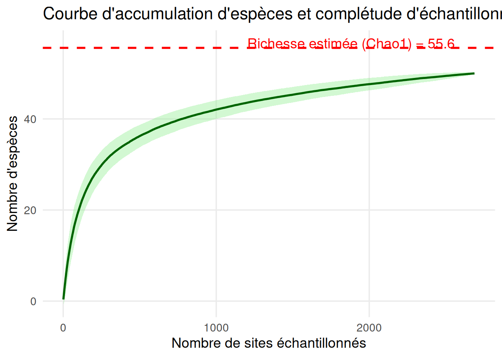
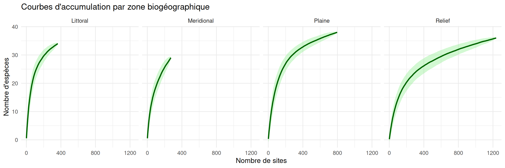

Analyse odonate
Répartition des Odonates de Bretagne
Les Odonates de Bretagne
Introduction
La Bretagne, région située à l’extrême ouest de la France, est entourée aux trois-quarts par la mer et possède un paysage aux reliefs prononcés. Fort de son sol majoritairement granitique, la majorité de l’eau bretonne est présente en surface et alimente un réseau hydrique très dense : 30 000 km de cours d’eau qui couvrent près de 70 % du territoire breton, constituant plus de 500 petits bassins versants (Savelli 2024). La Bretagne a donc été une région avec une quantité importante de zones humides. Seulement, d’après le Agence de l’eau Loire-Bretagne (2021), près de 42 % des zones humides de Bretagne auraient été détruites du remembrement de 1960 à 2019. C’est donc un milieu naturel très menacé mais qui, pourtant, représente un service écologique important. En effet, ces espaces permettent la régulation hydrologique des cours d’eau, d’assurer leur qualité par rétention, de stocker du carbone et d’abriter une biodiversité riche et particulière (Agence de l’eau Loire-Bretagne 2021; Skinner and Zalewski 1995).
Fort de ces connaissances, il est donc logique qu’une connaissance claire des communautés vivant et interagissant avec les zones humides permette une meilleure préservation de ces milieux.
Les odonates étant un ordre emblématique de ces milieux et indicateurs de l’état de la biodiversité, il a été naturel de les choisir comme sujet de cette étude.
C’est ainsi que nous pouvons formuler la problématique suivante :
Conclusion et limites de l’étude
Cette étude montre que les espèces sont relativement réparties de manière homogène sur tout le territoire. En effet, la plus part des espèces sont réparties sur toutes les zones géographiques : Littoral, Relief, Méridional et Plaine. La zone méridionale semble tout de même plus spécialisée que les autres. Il y a aussi une grande présence d’espèces au sein des zones humides de même qu’une certaine spécificité.
La science participative inclue certaines limites comme le risque d’avoir des taxons plus populaires que d’autres et donc un biais de comptage ou de reconnaissance ainsi qu’un biais de sites plus observés que d’autre au voisinnage des grandes villes par exemple.
Comment les populations d’odonates varient-elles selon les zones biogéographiques ?
Le jeu de données sur lequel cette étude se base provient d’une campagne de science participative menée de 2016 à 2026 par l’association Bretagne Vivante. Il a permis de recenser 57 espèces d’odonates ainsi que 2688 communautés selon un maillage de 4 km². Cette étude se divise en 4 zones biogéographiques : Littorale, Relief, Méridonale et Plaine.
Estimation du nombre d’espèces total selon le nombre d’espèces:
Estimer la richesse d’un écosysteme n’est pas une tache facile, malgré un grand effort d’échantillonage, il est possible que des especes rares n’ont pas été détectées. Mais il existe des indices, estimateurs pour estimer la richesse réelle à partir d’échantillonage.
Une des méthodes la plus connue, est l’estimateur Chao, developpé par Anne Chao (Chao, Wang, and Jost 2013).
Le principe de la méthode, est que les espèces rares (observées une seule fois ou deux fois dans l’échantillon) portent l’information sur les espèces non détectées. En effet, plus il y a d’espèces observées une seule fois (\(s_n^1\), les singletons), plus il est probable qu’il existe encore des espèces totalement absentes de l’inventaire.
L’estimateur de Chao1 s’écrit :
\[\hat{S}_{Chao1} = S_{obs} + \frac{(s_n^1)^2}{2\,s_n^2}\]
où \(s_n^1\) est le nombre d’espèces observées une seule fois (singletons) et \(s_n^2\) le nombre d’espèces observées exactement deux fois (doubletons) dans l’échantillon de taille \(n\).
Lorsque \(s_n^2 = 0\), cette formule devient instable (division par zéro) ; une version corrigée (biais réduit) est alors utilisée :
\[\hat{S}_{Chao1} = S_{obs} + \frac{s_n^1 (s_n^1 - 1)}{2\,(s_n^2 + 1)}\]
Cette correction évite la divergence de l’estimateur lorsque les doubletons sont rares ou absents, tout en restant cohérente avec la version non corrigée lorsque \(s_n^2\) est grand.
L’idée sous-jacente est donc la suivante : le nombre d’espèces manquantes \(\hat{S}_{Chao1} - S_{obs}\) est approché par le rapport entre le carré du nombre de singletons et deux fois le nombre de doubletons, ce qui traduit l’intuition que la rareté observée (beaucoup de singletons, peu de doubletons) signale une sous-estimation potentiellement forte de la richesse réelle \(S\).

Cela nous donne l’estimation à l’échelle de la Bretagne, mais nous pouvons regarder à l’échelle de chaque massif. Et voir si il y a des différences d’échantillonage entre les différents massifs.

Analyse de redondance (rda)
L’analyse de redondance permet d’expliquer une table réponse grâce à une autre matrice explicative (Van den Wollenberg 1977). C’est comme faire une ACP mais au lieu d’avoir une seule variable réponse, nous en avons plusieurs dans une table. Classiquement, la RDA nous permet de modéliser l’effet des variables environnementales sur l’ensemble de la communauté. Comme dans une ACP, nous essayons de créer une combinaison linéraires des varibles explicatives pour décrire les variations des variables réponse.
Nous allons essayer d’expliquer la présence et l’absence des espèces en fonction des zones biogéographiques et des autres paramètres écologiques (proportion de zones humides et taux d’anthropisation).
Nous allons commencer par sélectionner les variables qui nous intéressent parmis les variables de la table “data_eco”.
Pour que la RDA fonctionne nous allons devoir prétraiter les données. Nous avons besoin que nos 2 tables contiennent les mêmes sites, dans le même ordre.
Nous avons maintenant deux matrices qui ont le même format. Nous allons pouvoir procéder à la rda.
\[Y = A_{mean} + A_{σ} + B_{max} + ZH_{sum} + ZH_{mean}\] Avec Y, les colones de matrice_odo_rda, A l’anthropisation (moyenne et écrat type), Bmax la zone biogéographique majoritaire, et ZH les surfaces de zone humides (moyenne et somme)
On obtient une inertie contrainte et un R² très mauvais. Le modèle construit à partir des 6 variables explique donc très peu (8%) de la variation présente dans les données.
L’anova sur les varibles nous permet de voir que seules les variables anthropisation moyenne, anthropisation écart type et biogemax (littoral, releif, plaine et méridional) ont un effet significatif (très faible mais significatif).
Au vu du nombre de sites étudiés, il est logique que 6 variables ne suffisent pas à pour expliquer la variation observée. Il faudra donc plus de données pour obtenir une anaylse plus interessante.